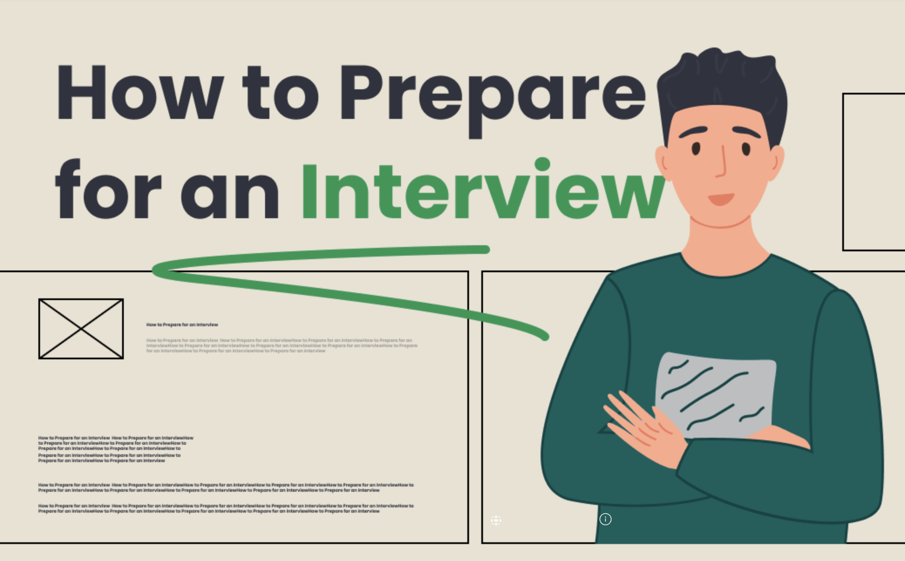
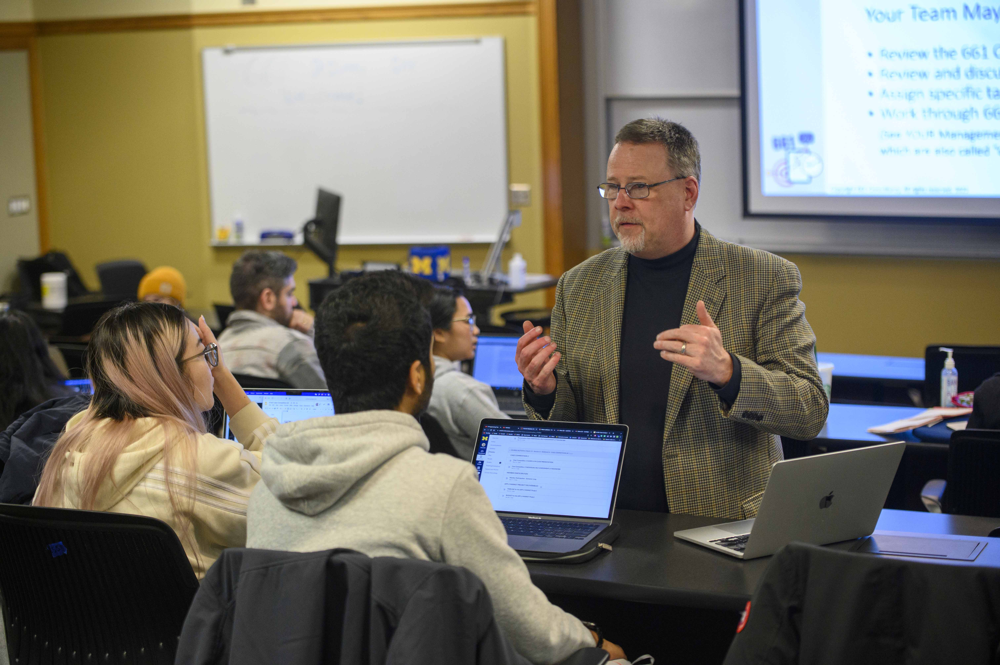

Interview Guidance
Before the Interview: Positioning Yourself
The interview is a crucial step in your search. Research helps you position yourself in terms of the employer’s needs.
- Why You? Articulate “Tell Me About Yourself.”
- Why This Position? Understand role demands.
- Why This Organization? Show fit to mission and values.
The Interview: Using Frameworks
Why You? (Tell Me About Yourself)
- Professional identity and areas of expertise
- Most recent position & key achievement
- Education, relevant skills
- Passion for the role
Why This Position / Organization / Industry?
Use Assertion + Proof: state your motivation and back it with examples.
Following Up After the Interview
- Send personalized thank-you notes within 24 hours.
- Reflect on what went well and what to improve.
- Follow up politely if past stated timelines.